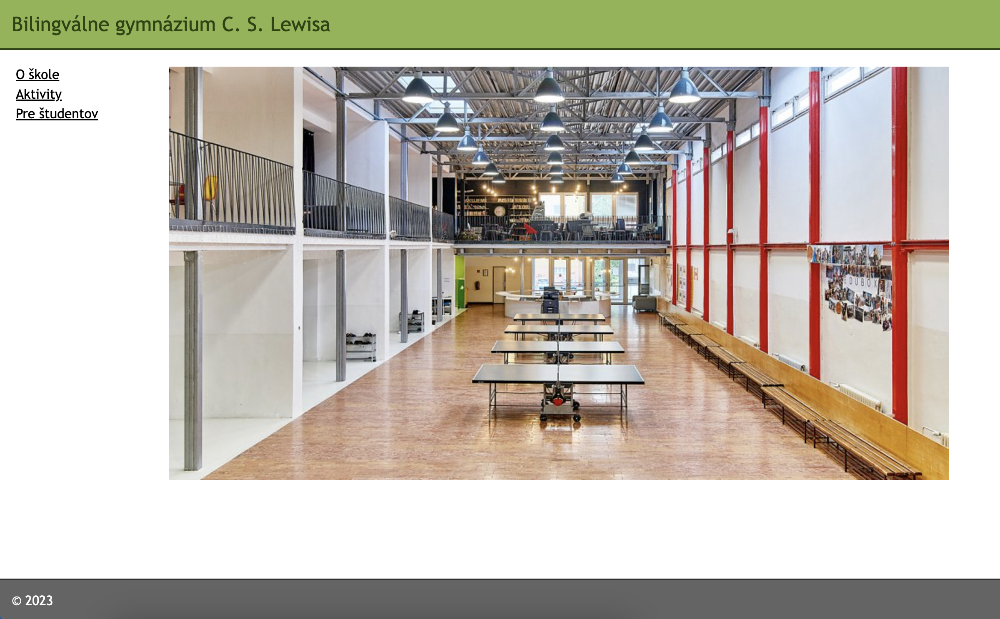

Test - Internet, webstránky a bezpečnosť na internete (2023 jar)
Na test máte čas do konca hodiny.
Časť 1: hrozby a nástrahy internetu
Časť 2: základy HTML a CSS
Zadanie: Vytvorte valídny HTML 5 dokument, ktorého podoba bude vizuálne čo najviac podobná obrázku nižšie. Ďalšie podmienky:
- Štruktúra dokumentu by mala byť tvorená HTML značkami, formátovanie nech je pomocou CSS. Snažte sa aj o prístupnosť (správne HTML značky).
- Na formátovanie stĺpcov používajte div-y a nie tabuľky.
- Odkazy by mali byť klikateľné, môžu smerovať na skutočné stránky bilgym.sk
- Môžete použiť ľubovolný obrázok našej školy.
- CSS môže byť súčastou dokumentu ale aj nemusí.
- Nápoveda: #8db44c, #646464
Výsledný dokument, teda samotný .html súbor alebo .zip súbor, obsahujúci všetky časti stránky, mi pošlite na email.
Ak by niekomu ostal čas, bonusové body sa udeľujú ak bude web prístupný aj na internete (v takom prípade mi pošlite len odkaz).
